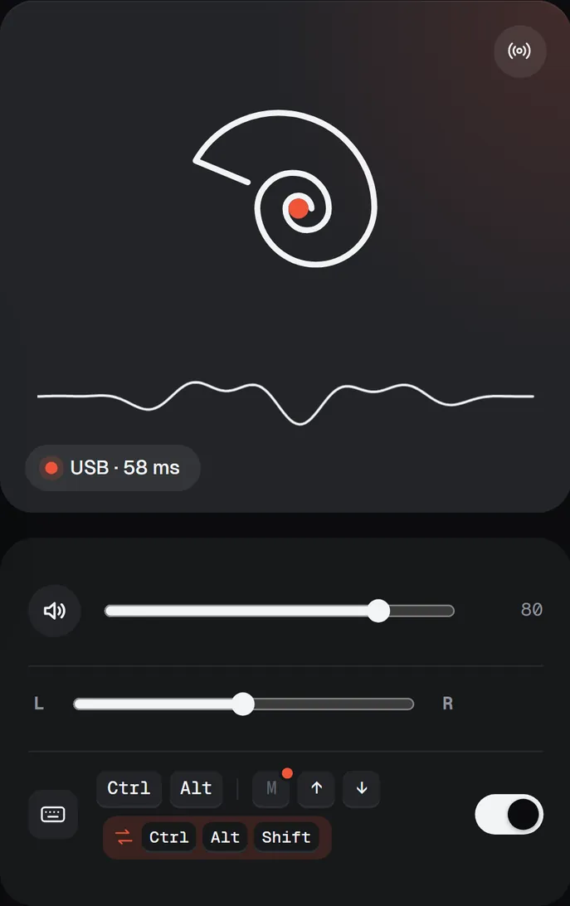
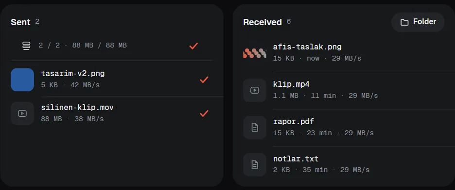
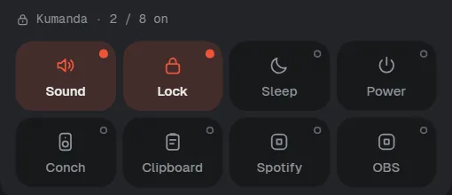

Göz
Share a Reel. Get notes back.
Send a Reel, a Short, a photo or a link from the share sheet. The PC saves it, transcribes it and turns it into notes you can come back to.
Files, music, a webcam, a second screen and a remote, passed between your iPhone and your Windows PC over your own Wi-Fi. No cloud, no account.
Conch, playing your phone's audio on the PC: 41 ms buffer, 58 ms end to end, nothing dropped.
Every job between phone and PC has one module. Type a task, or pick one of the Siri phrases that ship with the app.
Built-in Siri phrases
Each one does a single job between your phone and your desk. Turn on the ones you use; the rest stay out of sight.
Send a Reel, a Short, a photo or a link from the share sheet. The PC saves it, transcribes it and turns it into notes you can come back to.
What plays on your iPhone plays out of your desk speakers, with its own volume so it never fights your game.

Drag onto the window or right-click "Send with Wake". A batch shows progress per file, and if one fails, only that one is sent again.

Ekran turns the iPhone into a second display for the PC. Kamera makes its camera the PC's webcam, for calls and recording.
Launch apps, set the volume or lock the PC from the phone. Every action starts switched off until you allow it.

What Moorline leaves out: a cloud, an account, telemetry, auto-start, a background updater, a window left loaded in the tray. Updates are signed and checked only when you ask.
Download the installer from the latest release and run it. Moorline sits in the tray and starts only when you open it.
Install on the PC, open the Moorline app on your iPhone, scan once. Both on the same network; that is all it needs.